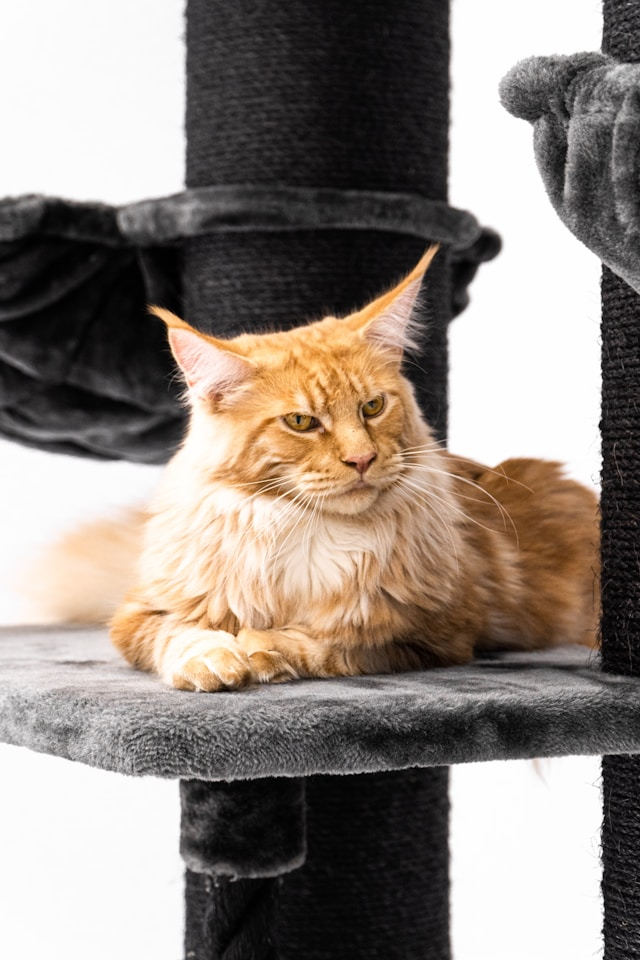
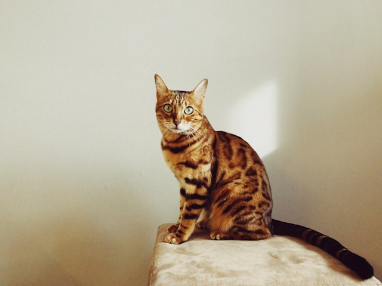

Select Cat Breed Information
-
Siamese

Appearance
- Blue, almond shaped eyes
- Triangular shaped head
- Large ears
- Slender, muscular body
- Typically, dark face, paws, and tail
Behavior
- Affectionate
- Intelligent
- Social
- Typically bond stringly with a single person
-
Maine Coon

Appearance
- Long-to-medium length fur
- Often longer fur on tail and neck
- Very large (considered the largest domestic cat breed)
- Broad chest
- Large-tufted ears
Behavior
- Gentle
- Extremely social
- Intellegent
- Laid-back
-
Bengal

Appearance
- Small, round head
- Large eyes
- Muscular body
- Spotted or marbled coats with a golden shimmer
Behavior
- Intelligent
- Very energetic
- Agile
- Curious
- Friendly